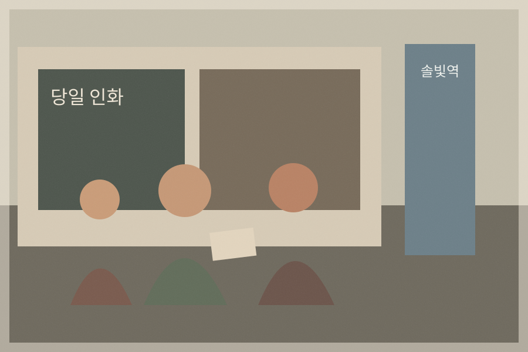

날짜
1998년 8월 29일
엽서 소인과 사진 봉투 메모가 일치 · 신뢰도 94%
장소
솔빛역 동쪽 출구 앞
사진 배경 간판과 아버지 음성 회상이 일치
정확한 날짜 · 94%
늦여름의 사진관 앞에서
1998년 8월 29일, 김서연 가족은 솔빛역 앞 작은 사진관에서 인화된 사진을 찾았다. 이 문장은 사진 봉투의 날짜, 엽서 소인, 두 음성 회상에서 공통으로 확인되는 사실만 사용했다.
“사진을 찾고 나왔을 때 역 앞 가게들이 하나둘 불을 켜고 있었어.” — 음성 회상 A-01 · 아버지 역할 합성 인용
사진 속 인물은 서연, 어머니, 아버지로 설정되어 있다. 세 사람은 사진 봉투를 들고 있으며, 사진관 유리창에는 ‘당일 인화’라는 글자가 보인다.
다만 촬영 시각은 확정되지 않았다. 아버지 회상은 막차 이후라고 말하지만, 어머니 회상은 오후 6시 전이라고 기억한다. 이 장은 그 차이를 해소하지 않고 다음 페이지의 서로 다른 기억으로 연결한다.
가족 검토 필요 1